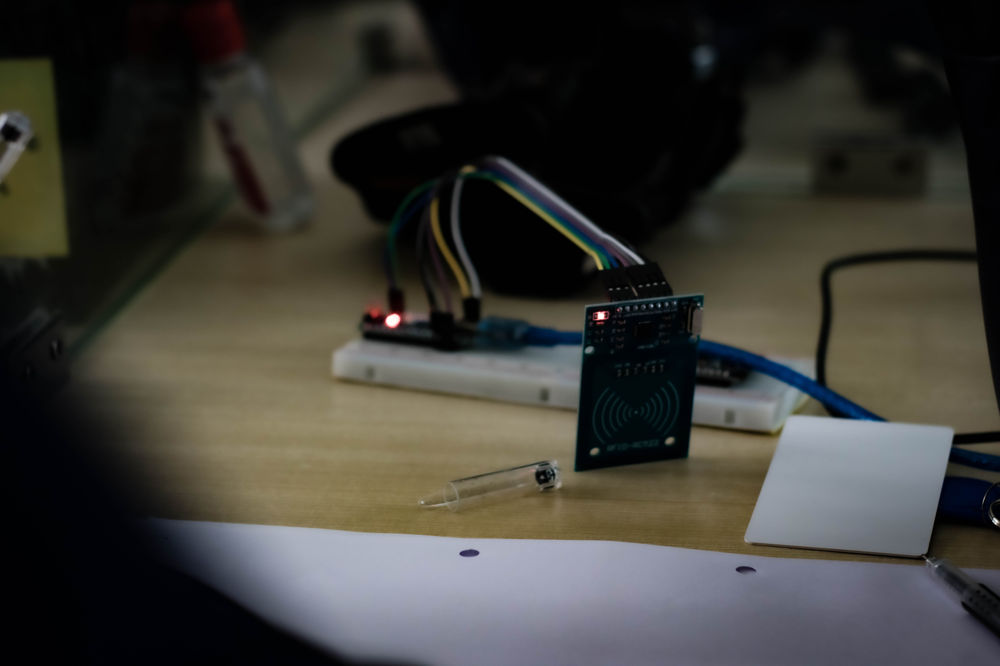

Project galary (If needed)


TARS Robotics is the robotics wing of TARS BINARY. We work on developing new technologies using the knowledge of Robotics and AI systems. Currently it is working on projects that serve the common consumers, companies, healthcare, and the military. With knowledgeable persons from robotics and engineering background, we have built our team to create innovations that can bring a wind of change in the current robotics development situation of Bangladesh. Projects that vary from personal or household uses to wartime services are being developed in TARS Robotics .
We already have built some systems and products like ‘TARS Smart Entry System’ and ‘TARS Traffic Law Enforcement System’ that serves in personal and traffic law enforcement sectors respectively. With our own production line and workshop made, we have a pretty effective and efficient workplace for innovation and production that creates more surprises for the market and technology sector of our country.
With new fresh minds and fresh graduates in our workforce, we are utilizing the power of youth in our interest. With new fresh minds and fresh graduates in our workforce, we are utilizing the power of youth in our interest.
Replacing employees with robots is an inevitable choice for organizations in the service sector, more so in the health care sector because of the challenging and sometimes unhealthy working environments, but, at the same time, the researchers propose that it should be done in a manner that helps in improving the employment and motivation of employees in all sectors. To use this opportunity in our interest, we are preparing for the future inevitable and also to make our country more prepared to co-operate with the new world. As we have observed the enormous potential of our youth and their interest in innovation, that is the prime driving force that keeps us going all the time. The need of the practical fields of Bangladesh is another motivation that makes us work towards our goal, and make our projects that can practically meet those needs. The enormous potential of our youth only needs a guideline to walk in the right path, and proper backup to step up. That’s what we provide them in TARS Robotics and make sure their dreams never wane in the face of poverty.
The need of the practical fields of Bangladesh is another motivation that makes us work towards our goal, and make our projects that can practically meet those needs. The enormous potential of our youth only needs a guideline to walk in the right path, and proper backup to step up. That’s what we provide them in TARS Robotics and make sure their dreams never wane in the face of poverty.